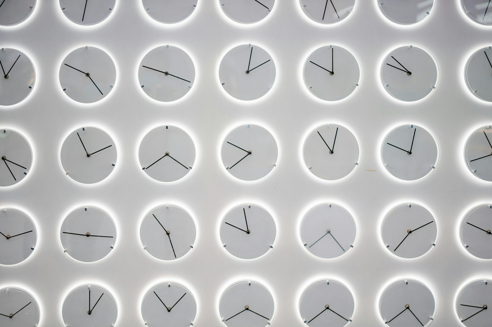

半步跨进三十岁，我还是不知道梦想怎么实现
AI 让我更容易做出一个东西。但做出来以后，它能把我带到哪里？关于时间、工具，还有那些还没想明白的事。

以前总觉得，三十岁是叔叔阿姨的年纪。
那个年纪的人，应该已经很像一个大人了。知道自己要什么，也知道日子该怎么过。至少遇到问题的时候，应该比小时候的我更有办法。
现在发现，自己已经半步跨进去了。可很多事情，还是说不清楚。
梦想是有的。但如果真正问一句：梦想怎么实现呢？
我说不清楚。
我知道自己还想做点什么，也愿意为它花时间。但从现在的生活到想要的生活，中间究竟怎么走，每天做的这些事情和那个方向有什么关系，我还没有想明白。
这也是我最近用 AI 时，经常会碰到的感觉。
我已经有点重度依赖 AI 了
现在有什么事情，我都想先问一下 AI。
大事小事，工作上的、生活里的，一个突然冒出来的想法，或者一句自己也没想明白的话，都会拿去跟它聊。平时能跟人讲的会讲，有些不太好向人开口、也不知道该跟谁讲的东西，也会跟它讲。
有时候我都不知道自己究竟想问什么，只是脑子里有一团东西，就先倒给它，让它帮我理一理。
这种感觉很方便，也很容易依赖。
跟人聊天，多少要考虑对方有没有时间，对这件事有没有兴趣，自己是不是已经说过很多遍。AI 随时都在。我可以绕来绕去，可以推翻刚才的话，也可以把同一个问题换一种说法再问一次。
有些想法确实是在这样的对话里变清楚的。它能帮我把纠结拆开，让我发现自己其实在同时想几件不同的事情。
但聊得多了，我也开始有点分不清：我是真的更接近解决问题了，还是只是更擅长描述问题了？
一场对话可以很完整。它有分析，有解释，有建议，甚至有接下来一个月的计划。读完以后，人会觉得自己往前走了一点。
可关掉窗口，现实里的事情未必有变化。该做的选择还没做，该迈出去的那一步还在那里。
我觉得这里面有一个很微妙的地方：理解自己的感觉，和改变自己的处境，都很重要，但它们发生在不同的地方。前者可以在一次聊天里发生，后者往往要等我真的做了什么，才开始发生。
AI 太容易给我前一种反馈了。至于后一种，我还是得自己去碰。
小时候盼明天，现在有时怕明天
小时候，一天好像很长。
等放学，等周末，等一个想看的节目，等一件期待的事情。明明也没过去多久，却觉得怎么还没到。那时候经常希望今天快点过去，最好一睁眼就是第二天。
现在有时候正好反过来。
晚上明明已经很晚了，却还是不太想结束这一天。因为睡一觉，明天就来了。明天可能又要上班，又要开始工作，或者那个一直不想面对的 DDL，又近了一天。
小时候的明天，常常装着期待。长大以后的明天，除了期待，也装着一堆已经排好队的事情。
钱也是。花钱的地方越来越多，很多钱还没有到手，就已经能想到该花在哪里。想给兴趣和探索留一点空间，又不能完全不管眼前的生活。
于是会出现一种挺矛盾的感觉：我希望未来早点到来，希望自己早点走到想去的地方；但我又希望明天来得慢一点，至少让我先把今天过明白。
2013 年有一项关于时间感受的研究，让 868 名参与者回顾一周、一个月、一年和十年过得有多快。研究发现，在较短的时间跨度上，时间压力大的人更容易觉得时间过得快；年龄差异主要出现在对十年的回顾中。这不能解释所有人的感受，但提醒我，觉得时间越来越快，未必只因为年纪在增长。[1]
对我来说，更贴近的解释是：越来越多的事情，开始提前占据我的时间。
一个周末还没开始，就已经有了安排。一笔钱还没花出去，就已经有了用途。一个晚上看起来空着，但第二天的事情已经在脑子里等着了。
所以，有时候真正少掉的，可能是那种可以暂时不用交代去向的时间。

我开始算投入产出比，是因为越来越难随便花时间了
放在这个背景下，我就能理解自己为什么越来越在意投入产出比。
不只是想算清楚一个模型每个月多少钱，做一个网页用了多少额度。我更在意的是，一个晚上花出去了，到底留下了什么。
如果留下一个能用的东西，那很好。如果没有成品，但弄清楚了一个重要问题，好像也值得。可如果几个小时过去，只是不断生成、报错、修改，最后也说不清下次会有什么不同，就会有点心疼。
然后我又会劝自己：这是学习，别那么急着算回报。
这句话也有道理。很多东西在学的时候，确实不知道以后会怎么用。如果每次都要求它马上证明价值，我可能连尝试都不会开始。
但我也不想让“学习”变成一个什么都能装进去的词。
我觉得学习至少要留下一点东西。可能是一种能力，也可能只是一次判断：原来这条路不适合我，原来这类任务要这样拆，原来这个模型做到这里就不够了。
下一次，我能因为这次经历，少一点盲目。这种回报虽然不能立刻折算成收入，但我认得出来。
真正让我不安的是，有时候连这种回报也认不出来。只有投入是真的发生了，至于它会不会有用，只能留给未来回答。
可现在的我，已经开始需要未来给一点回应了。
这并不意味着我要每一次尝试都赚钱。只是当生活需要钱，时间也开始有压力的时候，我很难像以前那样，对所有事情都说一句：先试试，以后再看。
AI 节省下来的时间，又去了哪里？
这里还有一个让我觉得矛盾的地方。
AI 明明能让我更快完成很多事情，为什么我还是觉得时间不够？
至少有一种可能，是我并没有停在原来的工作量上。以前做一个东西需要很久，现在快了，就想再加一点功能，再试一个想法，再换一个模型比较一下。
省下来的时间，很快又被新的事情填满了。
这样做也不一定不好。它让我接触了更多原本碰不到的东西。只是“完成得更快”和“有更多时间过自己想过的生活”，中间还隔着一个决定：我愿不愿意停下来，或者放弃一些同样可以做的事情？
这个决定，AI 不会自动替我作。
尤其当我还看不清方向的时候，每一个新想法都可能有用，每一个新工具都可能值得学。放下哪一个，都有点怕错过。
于是工具提高了效率，我却给自己安排了更多可能性。做完了很多小事，依然不知道哪一件会通向自己的梦想。
也许这才是我现在说“投入产出比很低”时，真正想表达的东西：我花了很多时间，可还不能确定，这些时间有没有在同一个方向上积累。
一直在 Vibe Coding，我究竟在积累什么？
这也是为什么，我会开始把一些事情叫作“Web 搬砖”。
提出需求，生成页面，发现问题，再修改。一件事情完成了，就可以开始下一件。每一次都有结果，也都能找到值得做的理由。
但如果认真问，做完这些以后，我有什么变得不一样了？这个问题反而比较难。
我不觉得网页没有价值，也不觉得每个小项目都必须有商业回报。只是单独看，每一次尝试都可能有意义；放在一起，它们却未必形成一条路。
我可能越来越熟练地使用工具，但还没有更清楚地知道，自己想用这些工具解决什么。
当然，刚开始的时候，熟悉工具就是目的。你需要亲手试过，才能知道一个想法现在有没有实现的可能。这一步不能省。
可当同一套过程已经重复了很多次，学习的标准可能就该变了。如果每次都是换一张页面、换一套颜色、换一个主题，却没有碰到新的问题，那我不能只因为又多了一个链接，就觉得自己又向前走了一步。
我想，这也是 AI 带来的一个难题：完成作品的速度，可能比我理解作品价值的速度快得多。
页面跑起来，可以马上确认。有没有人需要它，要等它走到别人面前。它能不能成为一个值得继续的方向，要经历更长的时间。
前一种反馈很容易得到，后两种没有那么容易。有时候，我可能因为前一种反馈足够及时，就一直留在那里。
我并不确定每一次尝试都要立刻去找用户。有些东西就是做给自己玩的，这没有什么不好。但如果我期待它把我带向一个更远的目标，就需要让它有机会接触真实的生活。否则我和模型可以一直把它改得更好，却始终不知道这种“更好”有没有人在意。
强模型帮我做成了，能力算谁的？
这也是我为什么还会对能力弱一点、价格低一点的模型感兴趣。
乍看起来有点矛盾。既然在意投入产出比，为什么还要选一个可能需要更多修补的模型？用最强的，尽快做完，难道不是更省事吗？
如果目标就是交付，这个想法很合理。模型费用低一点，不代表总成本就低。多修几轮、多检查几遍，都要花自己的时间。更麻烦的是，有些错误看起来像是做对了，等到真正使用的时候才暴露出来。
但如果目标包含理解模型，那事情又不一样。
强模型经常会替我补上没说清楚的条件，接住拆得不够好的任务。它做得越顺，我越可能看不见自己漏了什么。
换成弱一点的模型，有些缺口就会暴露出来。它在哪一步误解了需求，什么任务一长就容易乱，给它补哪些信息才有改善，这些差别会让我更具体地看到模型的能力边界。
我希望从中学会的，是下次面对一个任务时，能大致判断它需要什么能力，而不用每次都靠试。
只是，这种学习也不是自动发生的。
如果一个模型做错了，我只会不断说“再改一下”，那多出来的几轮对话，可能并没有让我更理解它。我甚至可能把需求没想清楚的问题，全部归结为模型不够强。
所以，我现在觉得，模型分级里最难的部分，是我得先有能力分辨失败发生在哪里。是任务太难，还是信息不足？是模型没有理解，还是我自己的要求前后矛盾？结果看起来不对，我又凭什么判断它不对？
这需要我对任务有一些理解，对结果有一些检验办法。不能连判断的依据也完全交给正在接受判断的模型。
一想到这里，就会发现，“学会用 AI”比我原来想的更复杂。工具可以帮我完成一个结果，但我还需要知道，这个结果能不能信，适合用在哪里，失败以后该怎么调整。
我并不需要为了证明自己懂，把所有工作再独立做一遍。但至少要知道，哪些地方是模型替我撑住了，哪些地方是我自己真的有了把握。
有梦想，为什么还是不知道怎么走？
写到这里，我发现，自己最初说的投入产出比，已经很难只用钱来解释了。
我也在算，一次探索能不能让我更清楚自己适合做什么；一个项目能不能让我接触到一个真实的问题；今天学到的判断，下一次还能不能用上。
这些东西都不能保证梦想实现。但如果它们能不断留下来，我至少会更相信，自己正在积累。
现在让我纠结的，是梦想在远处还算清楚，眼前的事情也很多，中间却缺了一些联系。
我可以继续学，继续做，继续让 AI 帮我分析。但这些动作究竟怎样接到那个梦想上，我还需要自己回答。
有时候，继续准备比选择一个方向容易。准备可以一直继续，而且很少需要承认自己放弃了什么。选择却意味着，我要把有限的时间放在这里，接受它可能没有结果，也接受一些别的可能性暂时顾不上了。
我不能确定自己的迷茫里有多少属于这种情况。但这个问题值得留下：我现在欠缺的，究竟是另一种工具、另一项能力，还是一次愿意承担后果的选择？
AI 可以给我很多方案，还可以给每一个方案找到理由。它不需要生活在我的时间里，也不需要承担我选错以后失去的那几个月。即使建议写得再完整，这一部分也还是属于我。
于是，半步跨进三十岁以后，我开始希望自己对“继续”有一点更具体的解释。
我可以暂时不清楚终点，也可以走一些弯路。但我希望知道，这次继续是在验证什么，得到什么样的反馈会调整，什么情况下可以停下来。
这不等于把所有兴趣都变成计划。有些事情只是喜欢，我也想给它留一点不用证明回报的空间。
但对于那些承载了我对未来期待的事情，我想认真一点。不能一直靠“可能有用”往下做，也不能因为暂时没有收入，就把它全部否定。
我需要的可能是一种更具体的耐心：愿意等待，但知道自己在等什么；愿意投入，但能看见什么正在变化。
这篇文章，也算一次尝试
以前总以为，到了叔叔阿姨的年纪，很多问题就该想明白了。
现在发现，自己还是会迷茫，还是会纠结钱和时间，还是会希望有人告诉我下一步怎么走。只是那个随时可以商量的人，有时候已经变成了 AI。
我没有因为写完这篇文章，就突然知道梦想该怎么实现。
但至少，我开始分清一些以前混在一起的东西：做出了一个东西，理解了一个问题，和让现实发生了一点变化，是三种不同的进展。我可以珍惜其中任何一种，也需要承认自己这一次到底得到了哪一种。
开始写文章，可能也是想给这些尝试留下一点线索。以后回头看，知道自己当时为什么出发，在哪件事上改变了想法，又有没有真的做过那个迟迟没做的选择。
梦想是有的。至于怎么走过去，我还是说不清楚。
明天也还是会来。希望下一次跟 AI 聊完，我能带着其中一个具体的问题，去现实里试一下。
参考资料
[1] Janssen, S. M. J., Naka, M., & Friedman, W. J. (2013). Why does life appear to speed up as people get older? Time & Society, 22(2), 274–290. https://doi.org/10.1177/0961463X13478052
期刊原文页：https://journals.sagepub.com/doi/abs/10.1177/0961463X13478052
图片来源（图库配图）
- Avtar Singh / Unsplash：https://unsplash.com/photos/laptop-and-lamp-on-a-desk-at-night-JitrjRXOMjg
- Donald Wu / Unsplash：https://unsplash.com/photos/a-white-wall-with-many-clocks-on-it-mRGtYItJRnA
- Amirreza Tavassoli / Unsplash：https://unsplash.com/photos/road-covered-with-fogs-USTu1ZKgVow